Lichee Tang >> Verilog
LED
開啟TD
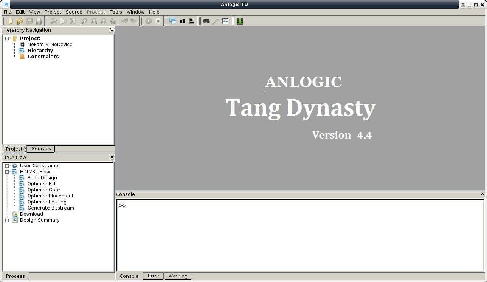
New Project...
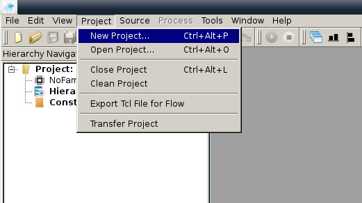
EG4 EG4S20B256
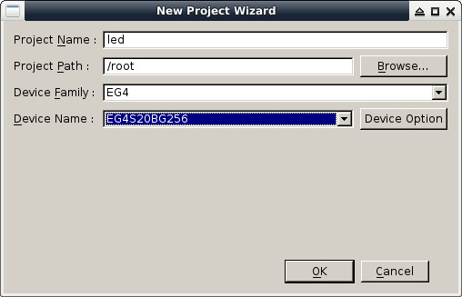
New Source
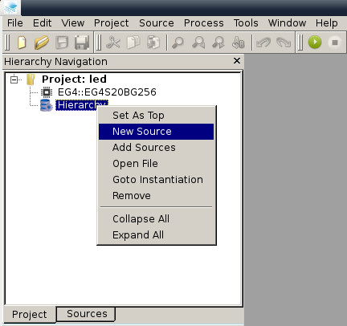
led.v
module led
(
input wire CLK_IN,
input wire RST_N,
output wire [2:0]RGB_LED
);
parameter time1 = 25'd24000000;
reg [2:0]rledout;
reg [24:0] count;
reg [1:0]shift_cnt;
initial
begin
count=25'b0;
rledout=3'b1;
shift_cnt=2'b0;
end
always @(posedge CLK_IN)begin
if(RST_N==0)begin
count <= 25'b0;
rledout <= 3'b1;
shift_cnt <=2'b0;
end
if(count == time1)
begin
count<= 25'd0;
if(shift_cnt==2'b10)begin
rledout <= 3'b1;
shift_cnt <=2'b0;
end
else begin
rledout <= {rledout[1:0],1'b0};
shift_cnt <= shift_cnt + 1'b1;
end
end
else
count <= count + 1'b1;
end
assign RGB_LED = rledout;
endmodule
Ctrl+S
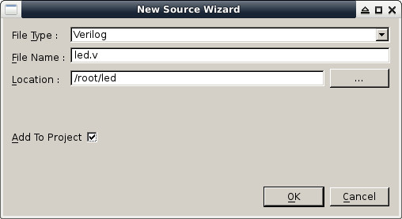
New
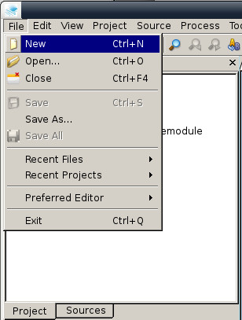
io.adc
set_pin_assignment {CLK_IN} { LOCATION = K14; } ##24MHZ
set_pin_assignment {RST_N} { LOCATION = K16; } ##USER_KEY
## RGB LEDs, 3 pins
set_pin_assignment {RGB_LED[0]} { LOCATION = R3; } ##LED_R, R3
set_pin_assignment {RGB_LED[1]} { LOCATION = J14; } ##LED_G, J14
set_pin_assignment {RGB_LED[2]} { LOCATION = P13; } ##LED_B, P13
Ctrl+S
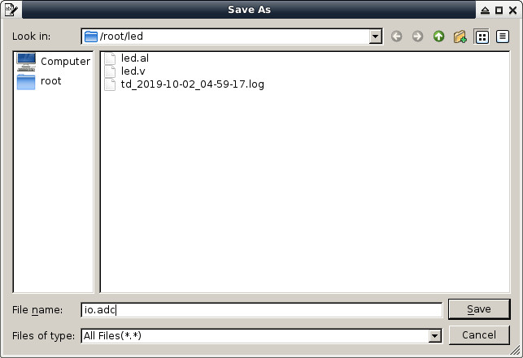
Add ADC File
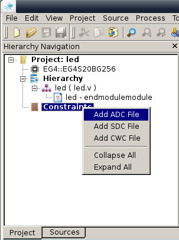
io.adc
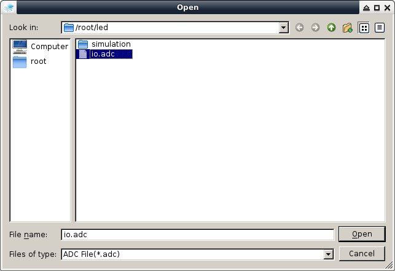
Run
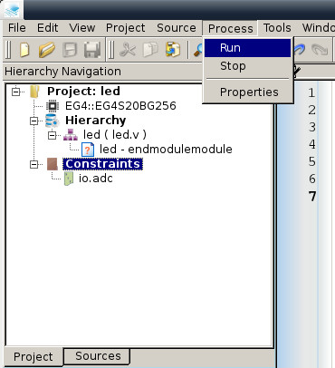
led.bit
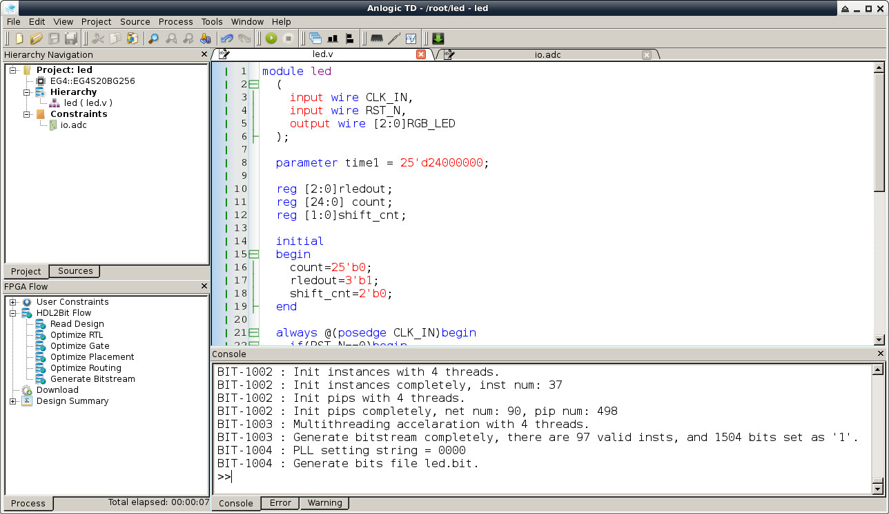
Download
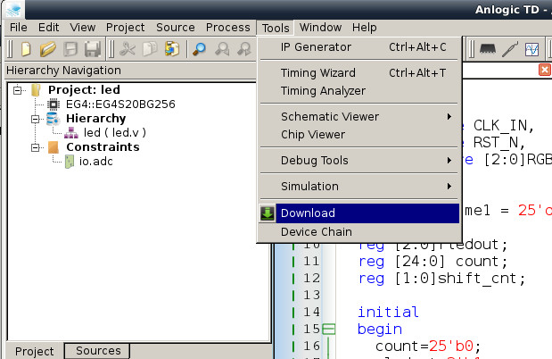
Add
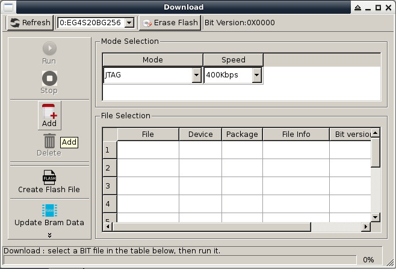
led.bit
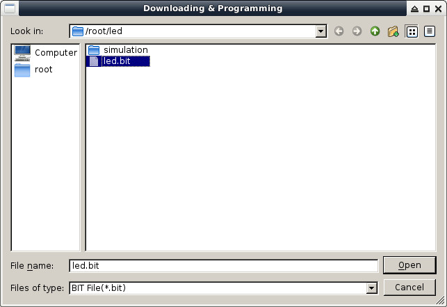
Run(假如要燒錄到Flash，Mode選擇PROGRAM FLASH)
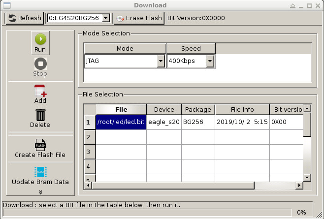
JTAG finished!
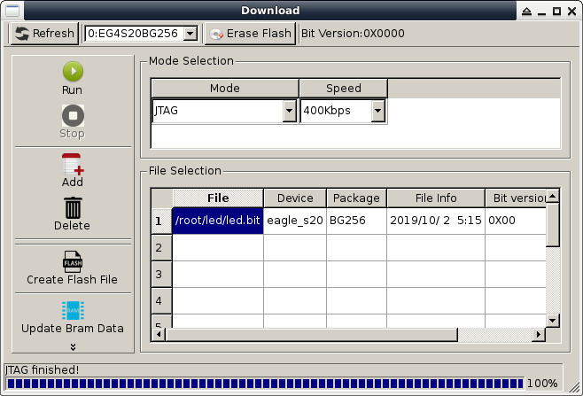
完成
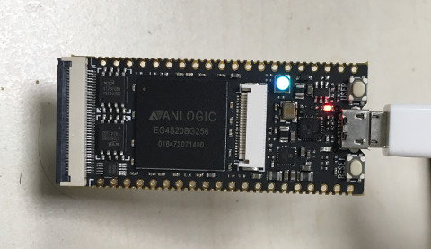